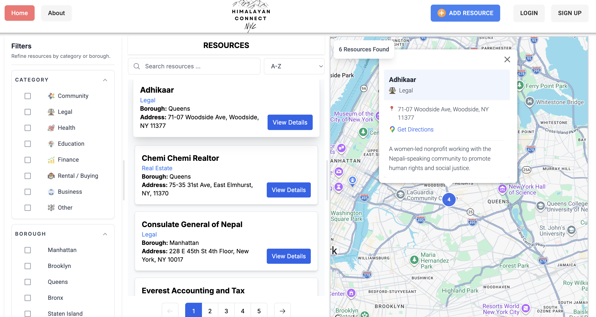
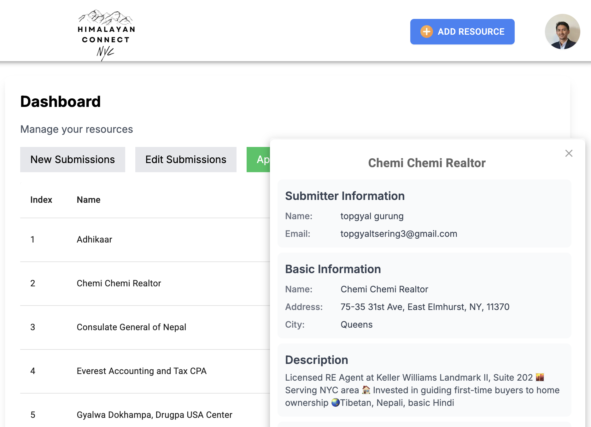

Java Spring Boot Ecommerce Store API
Designed a production-style e-commerce REST API with authentication, payment processing, database relationships, and scalable backend architecture using Spring Boot.

Building scalable software from frontend to backend, with a foundation in computer science and data.
Hi, I'm Topgyal.
I enjoy building software that solves real-world problems. My background
combines computer science, full-stack engineering, backend development, and
data, allowing me to understand how modern applications are designed, built,
deployed, and improved through data.
I've built production-style applications using JavaScript, TypeScript,
Python, Java, React, Next.js, Node.js, PostgreSQL, SQL, and cloud
technologies, with experience designing REST APIs, building databases,
developing user interfaces, and creating data-driven applications.
I'm currently seeking Software Engineering opportunities where I can continue
growing in backend engineering, distributed systems, and AI-powered
applications.
Computer Science graduate from Hunter College, complemented by intensive training in software engineering, cybersecurity, cloud, and data analytics.
Backend Engineering, Full-Stack Development, Data Engineering, AI-Powered Applications, and Scalable System Design.
Volunteer Accountant for Lo-Nyamship Association USA, supporting nonprofit operations while helping preserve Himalayan culture and strengthen community connections.
JavaScript, TypeScript, Python, Java, SQL, HTML, CSS
React, Next.js, Redux, Tailwind CSS, Material UI
Node.js, Express, Spring Boot, Flask, REST APIs, GraphQL
PostgreSQL, MongoDB, MySQL, BigQuery, Prisma ORM
AWS, Docker, GitHub Actions, Vercel
Git, Postman, Jest, Cloudinary, Figma
Built a production-ready full-stack platform that helps Himalayan immigrants discover trusted businesses, organizations, events, and community resources across New York City. The application combines multilingual support, interactive maps, secure authentication, and an admin dashboard to deliver a scalable, real-world solution for the Himalayan community.
Architecture: Next.js • TypeScript • Prisma ORM • PostgreSQL • Auth.js • Cloudinary • Google Maps Platform
Homepage and administrative dashboard.


Next.js App Router, Prisma ORM, PostgreSQL, TypeScript
Role-based authentication and content management and image uploads
Interactive Google Maps with multilingual search and filtering
Connecting Himalayan immigrants with trusted community resources.
Why I built it
Growing up in the Himalayan community, I saw how difficult it could be for new immigrants to discover trusted businesses, organizations, and local resources. Himalayan Connect NYC was my way of using technology to strengthen those community connections while giving local organizations a modern platform to reach the people they serve.
Key Features: Authentication • Role-Based Access • CRUD Operations • Google Maps Integration • Image Uploads • Multilingual Support • Responsive Design
Designing scalable database schemas with Prisma and PostgreSQL, building secure authentication and admin workflows, integrating third-party APIs like Google Maps and Cloudinary, and deploying a production-ready Next.js application.
These projects showcase my experience building production-style applications, REST APIs, backend systems, databases, and full-stack web applications.
Designed a production-style e-commerce REST API with authentication, payment processing, database relationships, and scalable backend architecture using Spring Boot.
Built a modular simulation game that combines deterministic game mechanics, random events, and live weather data while emphasizing clean architecture, testing, and maintainable backend design.
Developed a web application that simplifies course planning for CUNY students by helping them build and compare class schedules more efficiently than the existing CUNYFirst interface, improving the registration experience.
Designed a REST API supporting JWT authentication, authorization, pagination, and automated testing for a simulated dog adoption platform.
Built a full-stack social media application where users can create posts, follow and unfollow other users, and interact through a personalized feed. Designed with server-side rendering, efficient data fetching, authentication, and caching strategies to deliver a responsive and scalable user experience.
Developed a full-stack event management application using GraphQL, enabling users to create, manage, and book events through a modern API architecture.
Full-stack community platform connecting Himalayan immigrants with local resources.
Built a free CMS website for a social worker and meditation teacher from my homeland.
Organized a college internship info session for middle and high school students.
700+ hours, MERN, TypeScript, Next.js, GraphQL, PostgreSQL.
14-week hands-on security: SQLi, XSS, CSRF, Kali, Burp Suite.
5-course specialization: data structures, web APIs, databases, visualization.
EC2, S3, Lambda, RDS, IAM, VPC, CloudWatch, auto-scaling.
Java Spring Boot, Golang, System Design, Distributed Systems, API Design Patterns
Docker, Kubernetes, AWS, AI Engineering, LLM Applications
He is truly an exceptional individual with a remarkable work ethic, attention to detail, and an unwavering commitment to achieving outstanding results. Topgyal excelled in fostering collaboration, coordinating project resources, and communicating adjustments.
Extremely intelligent and diligent, while maintaining a very affable demeanor. Topgyal handled diverse tasks from data collection to logistics planning. He has high-level technical skills and excellent interpersonal abilities.
Full reference letters available on request.
Rick Rubin. On creativity as a practice—listening, presence, and making work that feels true.
Ben Horowitz. Building a startup—managing through chaos, making hard decisions, and leading when there are no easy answers.
Martin Kleppmann. Systems design, storage, replication, partitioning, and building reliable scalable data systems.
To read: 48 Laws of Power · The Beginning of Infinity (David Deutsch) · The Fabric of Reality · Nonviolent Communication
Read: Steve Jobs (Walter Isaacson) · Atomic Habits · Sapiens · The Subtle Art of Not Giving a F*ck · Think and Grow Rich · Autobiography of a Yogi
I'm looking for opportunities to work on ambitious products, collaborate with exceptional engineers, and solve challenging problems across software engineering, data, and AI.